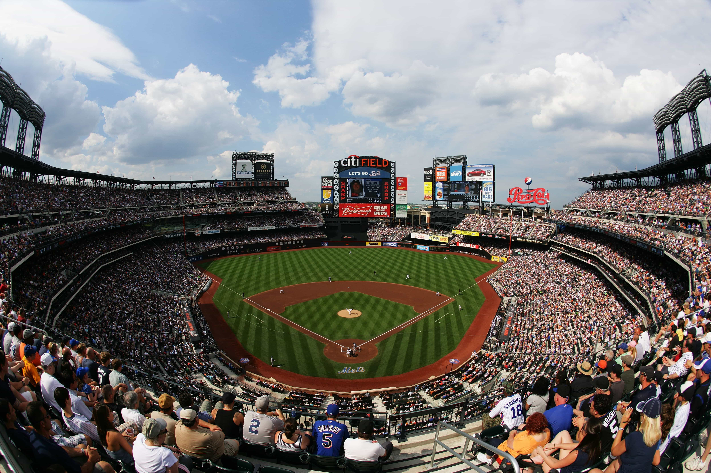

New York Mets
NL East
The New York Mets are an American professional baseball team based in the New York City borough of Queens. The Mets compete in Major League Baseball (MLB) as a member of the National League (NL) East division. They are one of two major league clubs based in New York City, the other being the American League's (AL) New York Yankees. One of baseball's first expansion teams, the Mets were founded in 1962 to replace New York's departed NL teams, the Brooklyn Dodgers and the New York Giants. The team's colors evoke the blue of the Dodgers and the orange of the Giants.